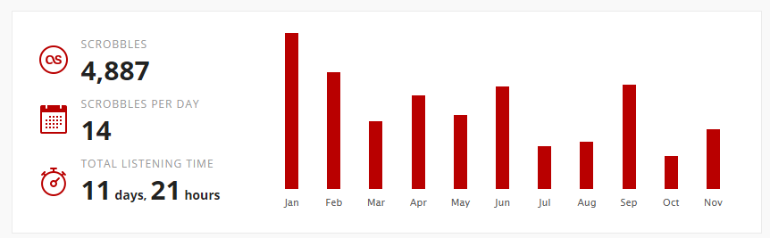

About
Inspired by The Personal Analytics of My Life by Stephen Wolfram
TOC
Tools used
This is a list of tools that I used to track my data and visualise it.
Data Tracking
- Twitter API - Social site.
- Twitter Analytics - Stats about my tweets
- Foursquare API - Tracks the places I check into
- Foursquare Year in review - Info graphics about your foursquare data.
- LastFM API - Tracks the songs that are played from my variouse devices and apps.
- Github API - Storage for the source code. Tracking commits
- Github contributions - The Github checkin values were extracted from the contributions page. I used macros to extract the data from the SVG image
- Moves-App - An Android and ISO app that tracks your movements and steps.
- Move-o-scope - Maping for Moves-App
- Google search history - A list of all the searches I have made this year
- RescueTime - Windows apps tracker.
Webpage and visualization
Totals
This is a year total summery of the daily stats in the graph below.
| Stat | Value | Change |
|---|---|---|
| Twitter tweets | 524 | ( 211) |
| Twitter impressions | 108,088 | ( 5,088) |
| Twitter engagements | 2,926 | |
| Twitter retweets | 110 | ( 5) |
| Twitter replies | 115 | ( 29) |
| Twitter likes | 295 | ( 36) |
| Twitter userProfileClicks | 179 | ( 44) |
| Twitter UrlClicks | 418 | ( 5) |
| Lastfm songsPlayed | 4,990 | ( 2,517) |
| Github checkins | 351 | ( 10) |
| Foursquare checkins | 849 | ( 85) |
| BC Hydro | 2838.55 kWh | ( 81.1) |
| Visa | {redacted} | {redacted} |
| Google Searches | ToDo | ToDo |
| Steps | 2,630,919 | ( 474,791) |
| Netflix | 320 | New |
Maps
This map is generated with the data recored from Moves-App and mapped with Move-o-scope. Interactive map

Four Square
This graphics is produced from FourSquare's year in review page

Rescue Time
These reports are created with RescueTime. The data comes from an app that is installed on my work and home PCs as well as my primary cell phone. The app only recoreds when the mouse and keyboard are active while using this app. This can distort the reportins for certain apps.
For example:
In Visual Studio I spent most of my time typing and that time gets reported correctly. While watching a movie in Netflix, I don't move my mouse or type on my keyboard and their app dones not correctly report the time spent in these apps.
| Rank | Activity | Overview |
|---|---|---|
| 1 | Gmail | Communication & Scheduling |
| 2 | netflix.com | Entertainment |
| 3 | facebook.com | |
| 4 | youtube.com | Entertainment |
| 5 | Visual Studio code | Software Development |
| 6 | Visual Studio | Software Development |
| 7 | fusion360 | Design & Composition |
| 8 | wireshark | Software Development |
| 9 | javaw | Software Development |
| 10 | slack | Communication & Scheduling |
| 11 | Signal | Communication & Scheduling |
| 12 | Google Documents | Design & Composition |
| 13 | {redacted} | {redacted} |
| 14 | google.ca | Reference & Learning |
| 15 | Twitter.com | |
| 16 | reddit.com | News & Opinion |
| 17 | {redacted} | {redacted} |
| 18 | aliexpress.com | Shopping |
| 19 | Skype | Communication & Scheduling |
| 20 | play.google.com | Entertainment |
| 21 | Google Chrome | Utilities |
| 22 | hackaday.com | News & Opinion |
| 23 | inkscape | Design & Composition |
| 24 | sublime_text | Software Development |
| 25 | github.com | Software Development |
| Rank | Activity | Overview |
|---|---|---|
| 26 | {redacted} | {redacted} |
| 27 | desktopdungeons | Entertainment |
| 28 | 5piceide | Software Development |
| 29 | Twitter.com | |
| 30 | Adobe Reader | Reference & Learning |
| 31 | stackoverflow.com | Software Development |
| 32 | {redacted} | {redacted} |
| 33 | airbnb.ca | Reference & Learning |
| 34 | teamviewer | Utilities |
| 35 | minimetro | Entertainment |
| 36 | gitkraken | Software Development |
| 37 | photos.google.com | Entertainment |
| 38 | crimsonland | Entertainment |
| 39 | cura | Design & Composition |
| 40 | kickstarter.com | |
| 41 | instagram.com | |
| 42 | shellexperiencehost | Utilities |
| 43 | google.com | Reference & Learning |
| 44 | google.com/calendar | Communication & Scheduling |
| 45 | dxp | Design & Composition |
| 46 | Google Spreadsheets | Business |
| 47 | skitch | Design & Composition |
| 48 | instructables.com | Reference & Learning |
| 49 | hackaday.io | News & Opinion |
| 50 | Amazon AWS Console | Software Development |
Last.fm
Last.fm tracks and visualise, in real-time, the listening habits & trends of Last.fm's global community
Page last updated: January 2017